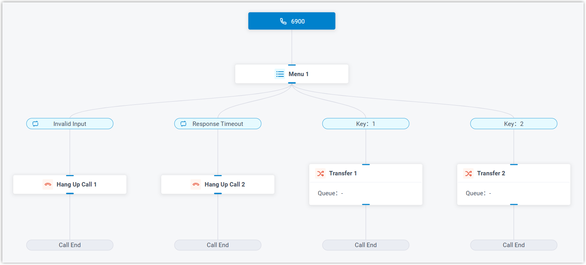
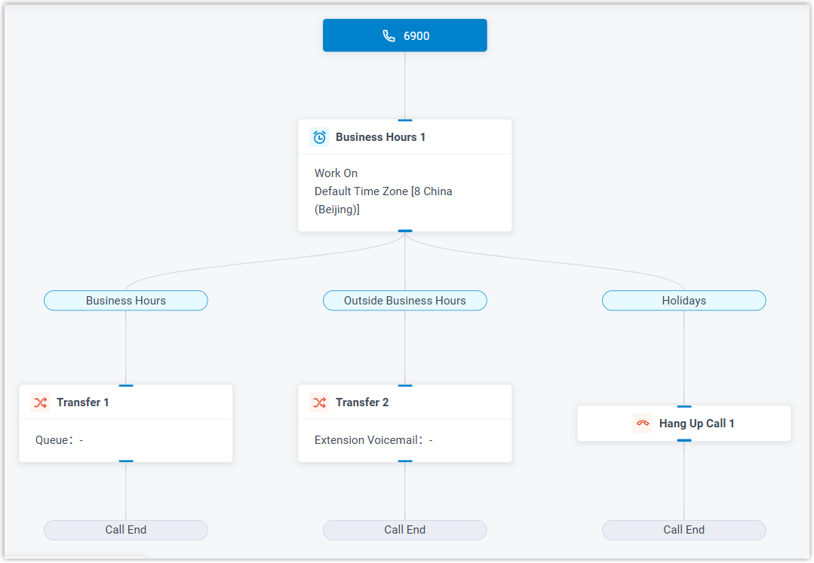
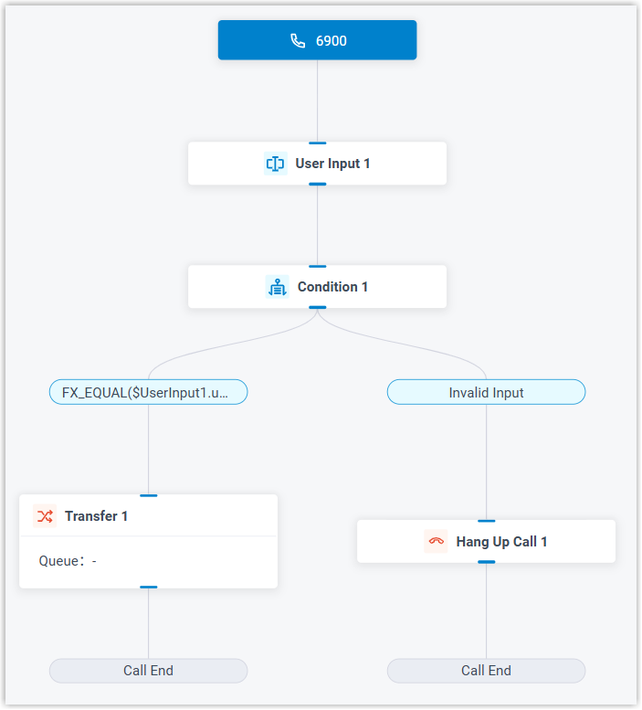
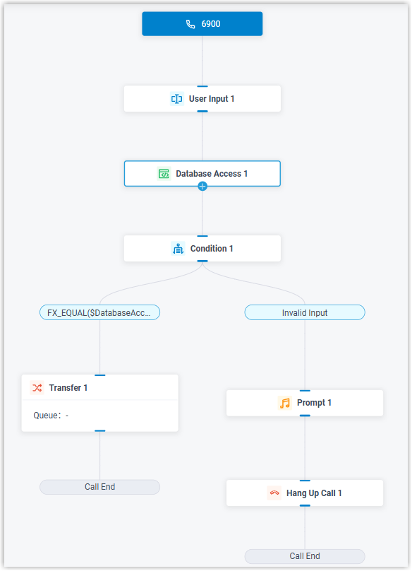
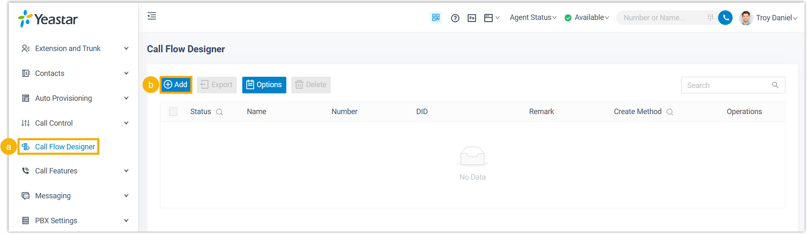
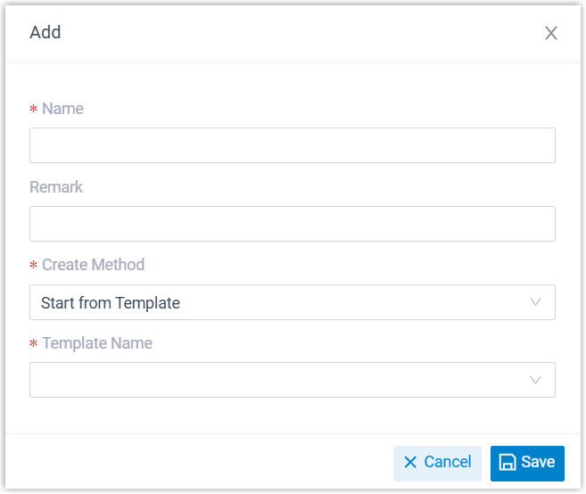
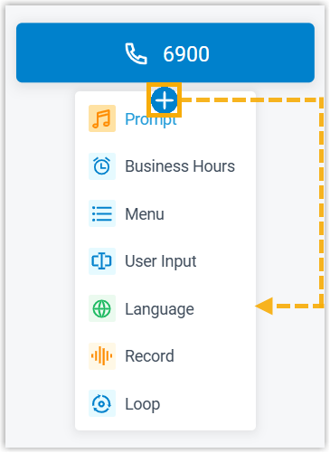
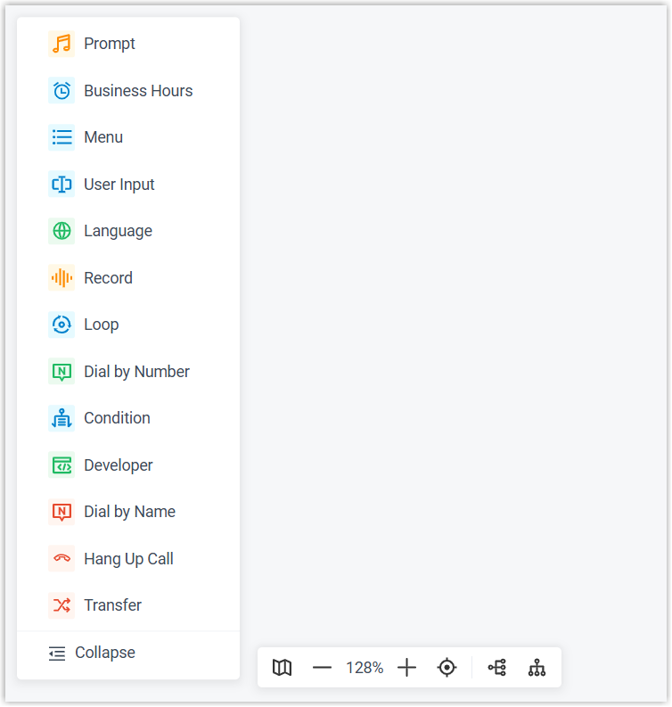
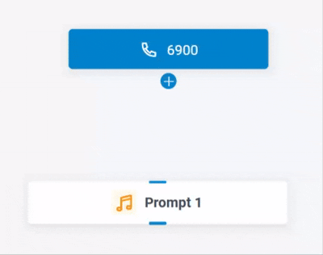
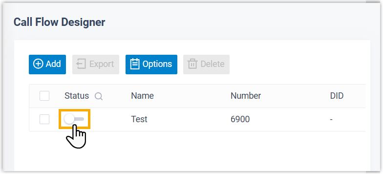

Set up a Call Flow from Template
Yeastar P-Series Software Edition provides built-in templates that cover common use cases. You can use a ready-made template to build a custom call flow.
Template introduction
| Template | Description | Screenshot |
|---|---|---|
| Linear Call Flow |
A linear call flow allows you to route calls to different destinations based on the DTMF digit entered by callers. |
 |
| Time-based Call Flow |
A time-based call flow allows you to route calls to different destinations based on the business hours configured for default time zone. |
 |
| Certified Call Flow |
A certified call flow allows you route calls to different destinations by evaluating user input against pre-defined expressions. |
 |
| Database Authentication | A database authentication call flow allows you to route calls to different destinations by validating user input against database. |  |
Step 1. Create a call flow from template
- Access the creation page of call flow.

- Log in to PBX web portal, go to Call Flow Designer.
- Click Add.
- In the pop-up window, complete the following settings, then click
Save.

- Name: Enter a name to help you identify the call flow.
- Remark: Add a brief description.
- Create Method: Select Create by Template.
- Template Name: Select a template.
The call flow is created, and the webpage is redirected to the call flow canvas.
Step 2. Add and connect components
- Add and configure components.
- Add components using one of the following methods:
- Click on an component,
then select a component.

- From the left components toolbox, click or drag a component
to the canvas.

- Click on an component,
then select a component.
- Click the component to edit its settings.
Refer to the table below for introduction and instruction on each component.
Component Description Initial Action Initial Action component is the entry point of a call flow. It allows you to specify the phone number(s) that callers can dial to initiate the flow, and optionally configure an audio prompt to welcome callers or provide instructions for them.
For more information, see Initial Action.
Prompt Prompt component allows you to play audio prompt(s) or a text-to-speech message to callers.
For more information, see Prompt.
Business Hours Business Hours component allows you to route calls to different destinations based on the time of day.
For more information, see Business Hours.
Menu User Input User Input component allows you to collect DTMF digits from callers, typically used with Condition component to process user input and route calls.
For more information, see User Input.
Language Language component allows you to change the system prompt language for subsequent components in a call flow.
For more information, see Language.
Record Record component allows you to start or stop recording a call when it reaches the component in the call flow, and optionally configure prompts to inform call participants at the start and during the recording. For more information, see Record.
Dial by Number Dial by Number component allows callers to directly dial a number to reach the destination.
For more information, see Dial by Number.
Dial by Name Dial by Name component is one of the end components to terminate a call flow. It allows callers to reach extension user by entering the first three letters of the user's name.
For more information, see Dial by Name.
Transfer Transfer component is one of the end components to terminate a call flow. It allows you to transfer callers to a designated destination, and optionally configure prompts to inform them of the transfer.
For more information, see Transfer.
Hang Up Call Hang Up Call component is one of the end components to terminate a call flow. When callers are routed to the component, the call will be disconnected.
For more information, see Hang Up Call.
Condition Loop Developer
- Add components using one of the following methods:
- Click and drag to connect components.

- At the top-right corner, click Save.
Step 3. Enable the call flow
- On the call flow list, turn on the switch of the desired call flow.

- In the pop-up window, click OK.